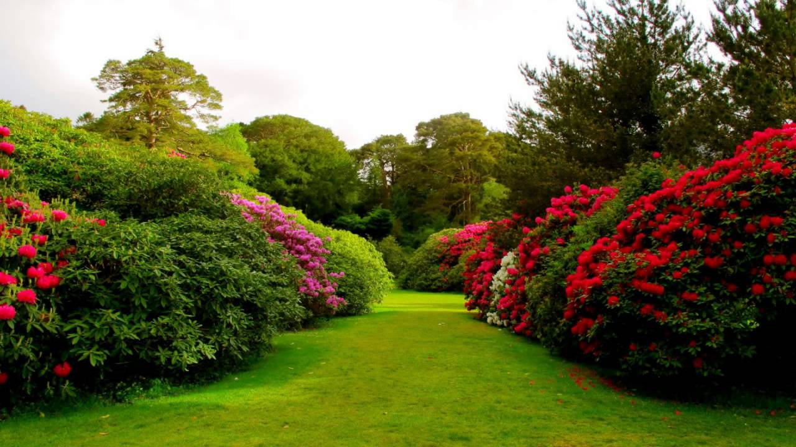

NQ's Gardening Service


"A garden requires patient labor and attention. Plants do not grow merely to satisfy ambitions or to fulfill good intentions. They thrive because someone expended effort on them". — Liberty Hyde Bailey
Gardening is the practice of growing and cultivating plants as part of horticulture. It is one of the most populair hobbies and has been practiced for hundreds of years. Plants are often grown for their flowers, foliage, or overall appearance. This was ofcourse not the case decades ago, because gardening was practice for the growth of fresh fruits and vegetables, also knoen as 'useful plants'. Planting of useful plants is still widely done around the world, however due to widely availability of fruits, vegetables and herbs in supermarkets, it is not realy required. Gardening is considered by many people to be a relaxing activity. Not only is it relaxing, it is also healthy and creative. Gardens can be designed and decorated in many ways, which can also reflect the owners personality just like an painter (artist). Gardens come in different sizes. Two main sizes are small and large. Both types require different ways of design. Any garden can look amazing with the help of planning, planting of suitable plants and using the right tools to keep up with its appearence and health. Gardening ranges in scale from fruit orchards, to long boulevard plantings with one or more different types of shrubs, trees, and herbaceous plants, to residential yards including lawns and foundation plantings, to plants in large or small containers grown inside or outside. Gardening may be very specialized, with only one type of plant grown, or involve a large number of different plants in mixed plantings. It involves an active participation in the growing of plants, and tends to be labor-intensive, which differentiates it from farming or forestry.
Watch this informative video for more information about the great art of gardening:
Please select the applicable size of garden:
large gardens are great ofcourse, but small gardens can be great too. Small gardens have less space ofcourse, however if used right, it can offer a great space to relax after a long day or soak up the sun in the summer. furniture can be placed in small gardens, however requires to be worked into a scheme. Trying to achieve too much is ofcourse not the right thing, because it could cause chaos and cause dillution. Space is key when gardening, which means that keeping it minimalistic and clean with no overgrown lawn, bushes and weed is a key point. Click on one of the following pictures or the navigation bar and choose the right sizegarden. depending on the size, the page will offer you with great tips, image, links and examples.


Uk's Best Garden Online Shopping Websites!
Weekly Prize draw 2018
Fill in the form now to have a chance in winning a Bernie the bear ornament!!

This adorable 'Bernie the Bear' ornament can be placed anywhere in the garden. Near the pond, next to a tree or on a nice piece of garden furniture. Perched on a rock and with a fish already hooked, this black bear may just be in for a good day of fishing. Full of character and perfect for placing alongside a pond! A great gift idea!
Just fill in your name, age and email address. The winner will hear back on the 19th of June 2018! - Nazdar